Meble kute
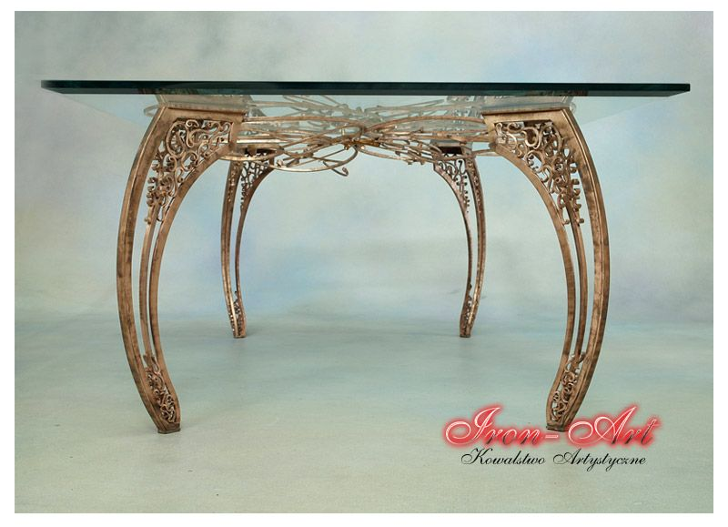
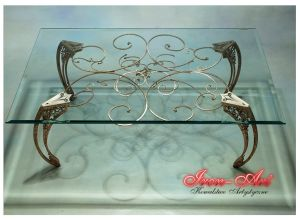
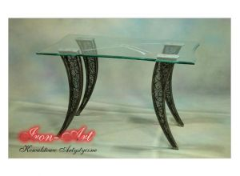
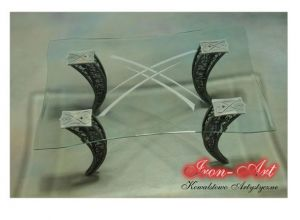
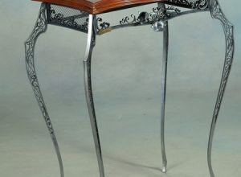
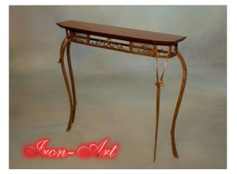
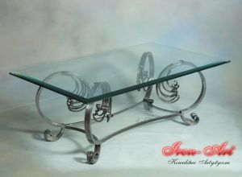
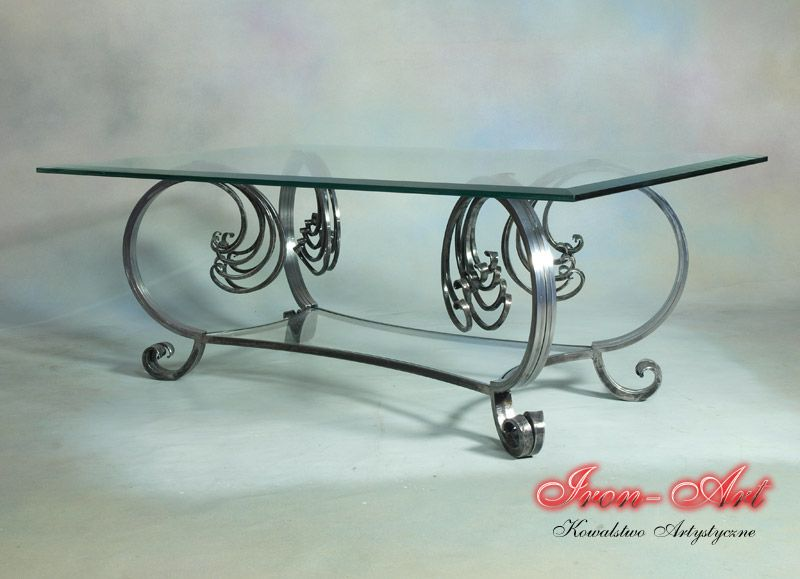
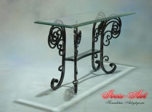
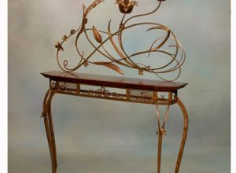
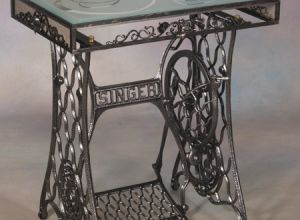
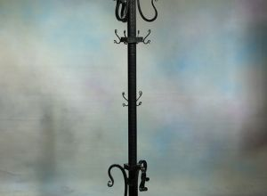
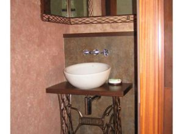
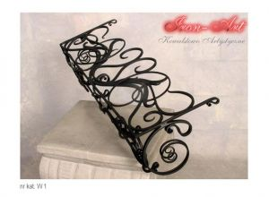
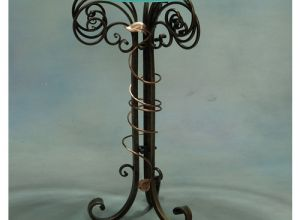
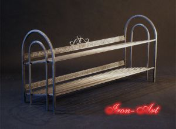
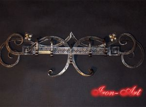
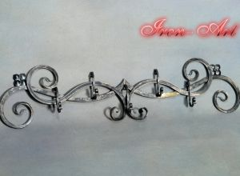
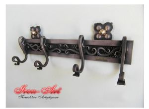
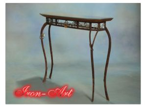
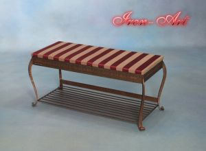
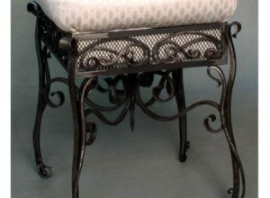
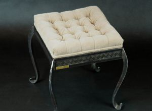
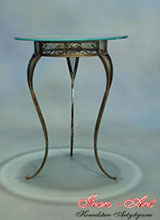
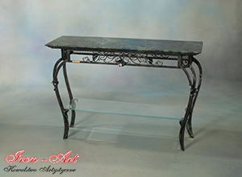
Meble kute Łódź
Jako kowal oraz właściciel pracowni kowalstwa artstycznego oferuję meble kute, wykonane w secesyjnym stylu, zdobione ręcznie i wykończone z wielką precyzją.
W asortymencie oferujemy następujące meble kute: ławy kute ze szklanymi blatami, szklane blaty, ławy ozdobne, stoliki miedziowane, stoliki kute z drewnianymi blatami, mniejsze stoliczki kute, wieszaki stojące, stoliki artystyczne do maszyn do szycia, wieszaki artystyczne na ściany, taborety tapicerowane oraz taborety kute.
Zachęcamy do zapoznania się z cennikiem naszych usług oraz do odwiedzenia siedziby naszej pracowni w Łodzi.
Zapraszamy również do zapoznania się z innymi produktami z naszej pracowni takimi, jak balustrady kute wewnętrzne, czy metaloplastyka.